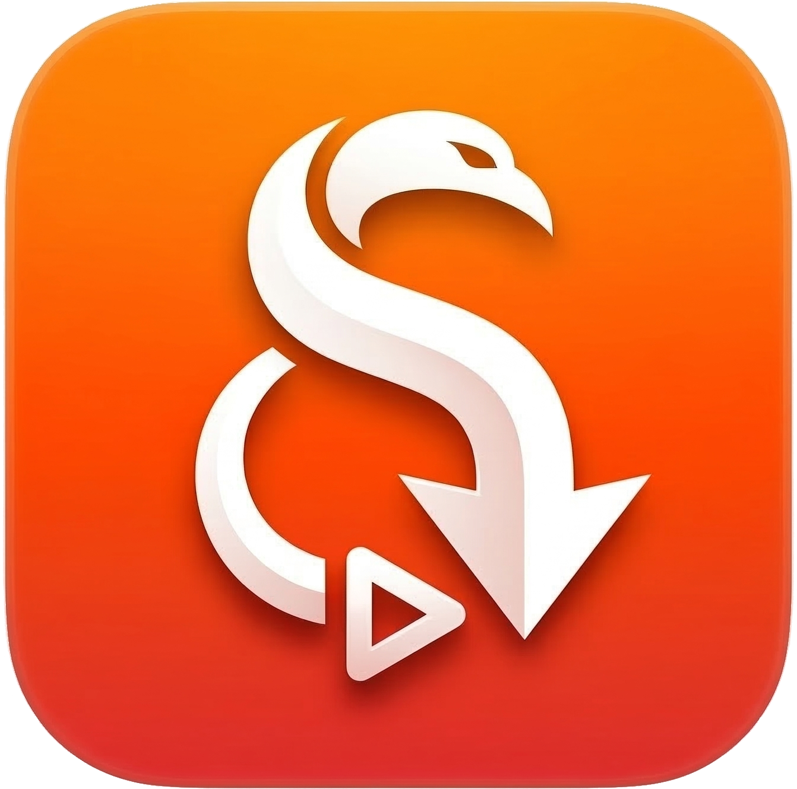

macOS向け動画ダウンローダー
macOS Sonoma 14 以降 · Apple Silicon / Intel 対応
yt-dlp, FFmpeg, Deno を自動ダウンロード。インストールして起動するだけですぐ使えます。
YouTube, ニコニコ動画, TVer, ABEMA, TikTok, X, Bilibili など、あらゆるサイトに対応。
ライブ配信をリアルタイムで録画。開始から録画、途中からの録画に対応。
MP4 は H.264+AAC でエンコード。ダウンロードしてすぐ QuickTime Player で再生。
アプリ内ブラウザでログインし、会員限定コンテンツもダウンロード可能。
Sparkle によるアプリ自動更新。yt-dlp や FFmpeg もアプリ内でワンクリック更新。
xattr -cr /Applications/yt-dlp-swift.app本アプリは著作権で保護されたコンテンツの無断ダウンロードを推奨しません。利用者は各国・地域の法律を遵守し、自己責任でご利用ください。